IMAGES
 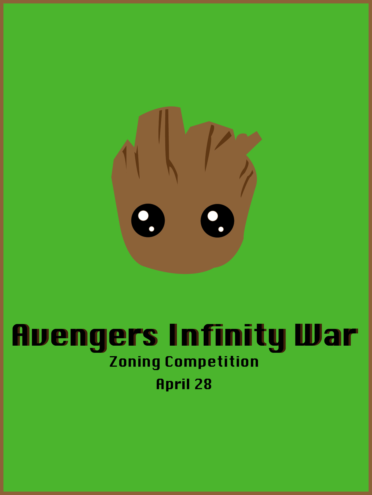
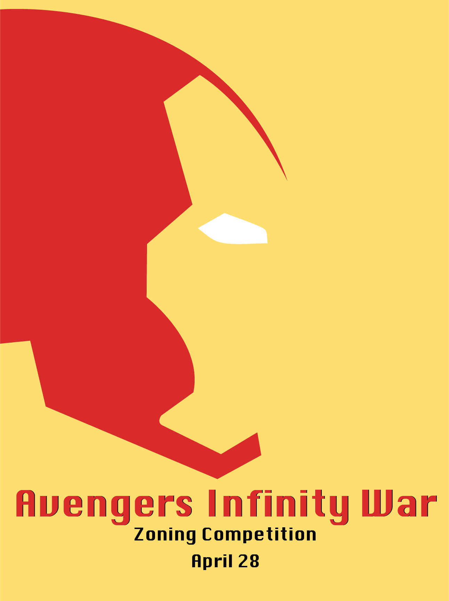
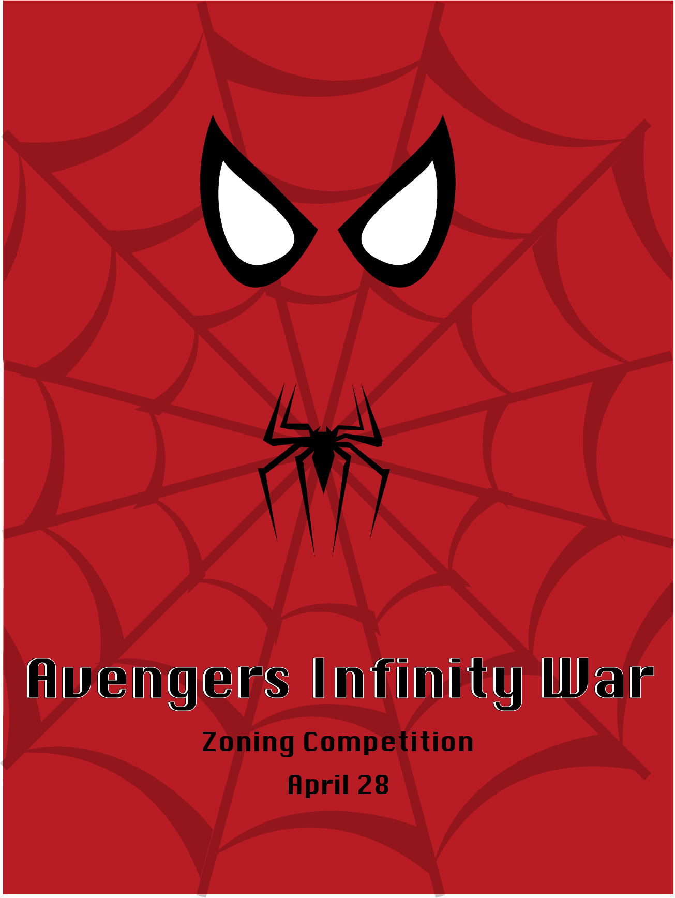
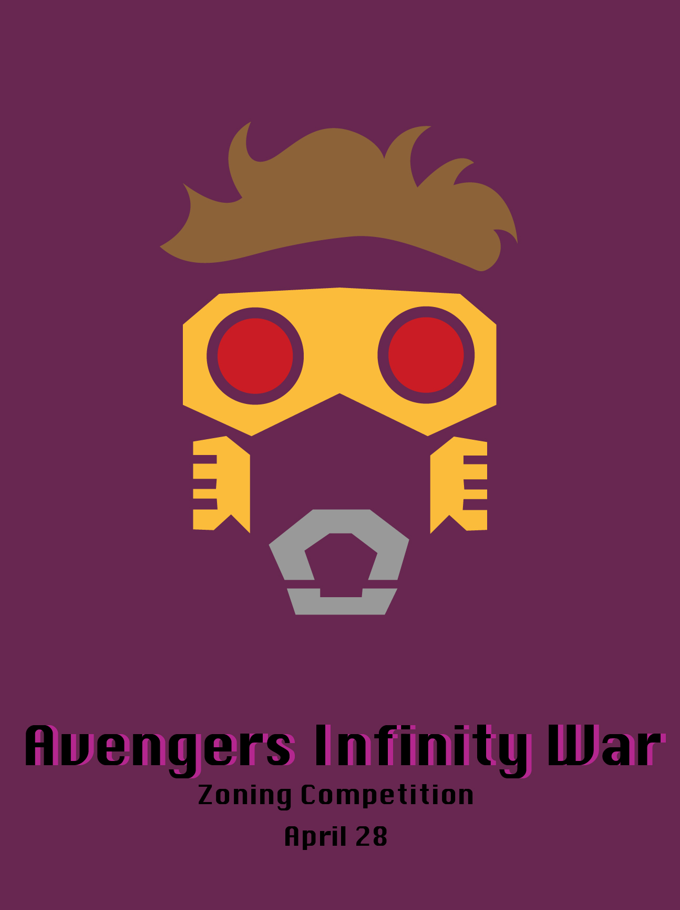
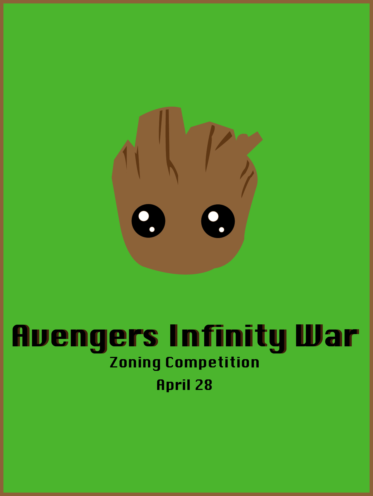
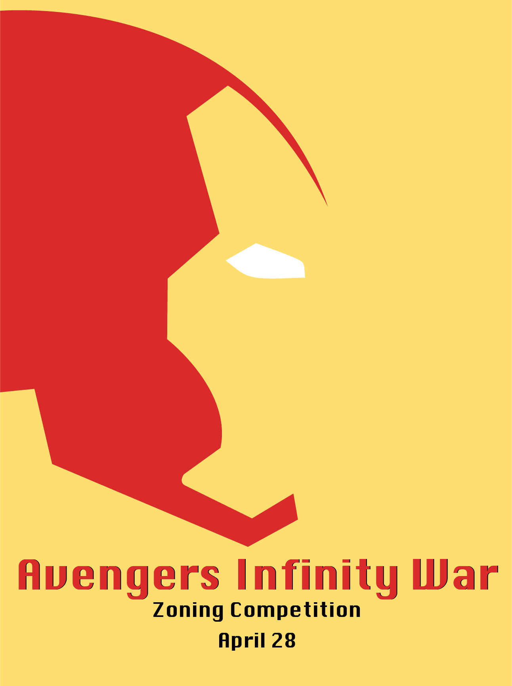
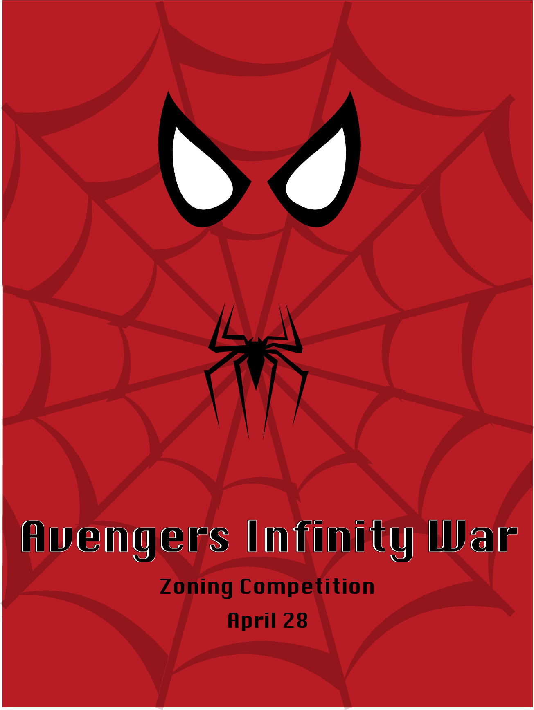
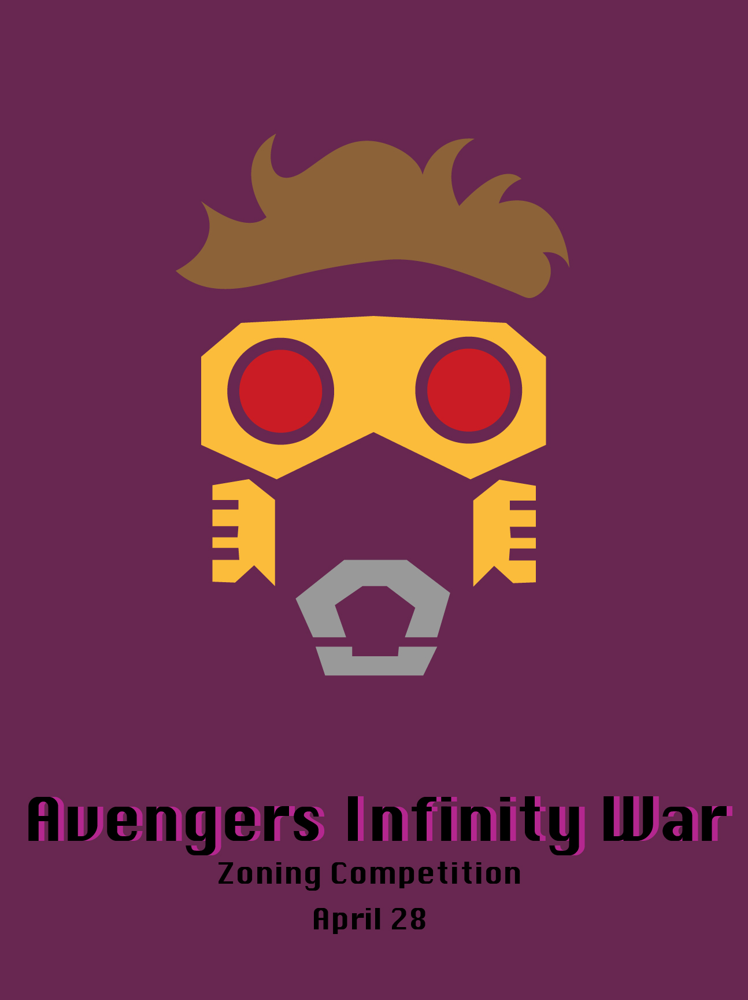
My name is Jessica Martin, a web and graphic designer based out of Canada. I am a third-year Digital Communications student registered at Humber College in Toronto, Ontario. I am part of the inaugural group of students enrolled in the Digital Communications program after it was created in 2015.
I touch on a diverse number of creative aspects, from photography, videography, down to the classic pen and paper, writing. I love drawing, I should say this is my number one way of expressing my creativity. I take that vision from paper to photoshop and illustrator and my imagination is brought to life. I have had the pleasure of creating logos and advertisements for conferences and events around my hometown, Burlington, and hope to take these skills to the big city of Toronto.
During my studies, I have honed my skills in digital storytellings, visual communication, web applications, social media and business acumen. I hope to continue developing my portfolio and building my network as I establish myself as a young professional in the industry.
I am always willing to take on new challenges and opportunities as part of the dynamic environment of digital communications.
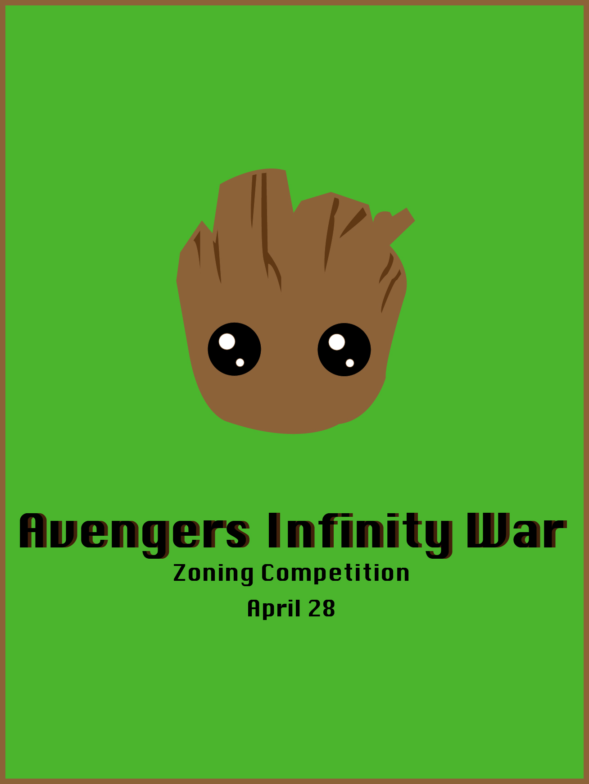
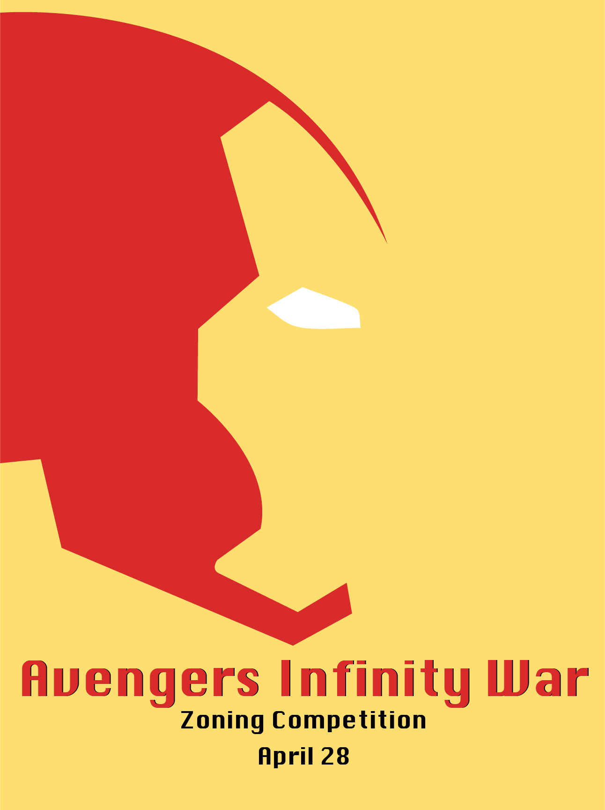
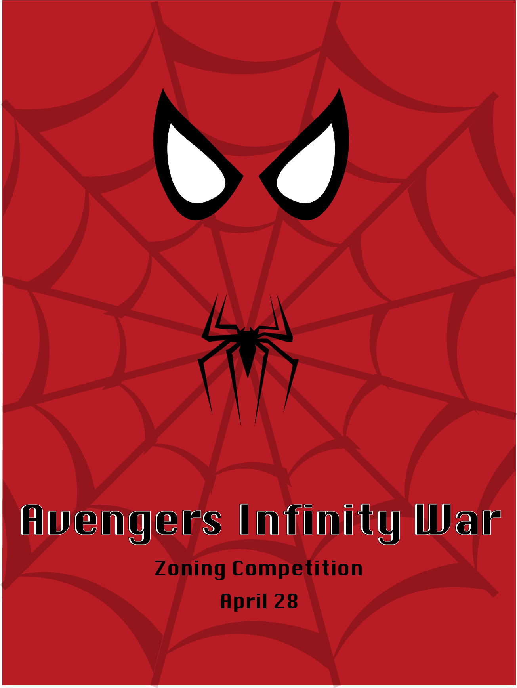
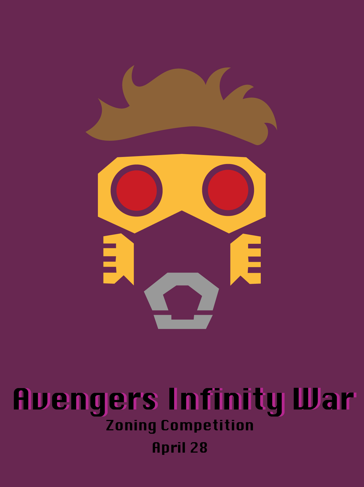
Get in touch with me jessmartian97@gmail.com
905-977-7767